Every printed piece in the base set, with what it does, how it fits with the rest, and a recommended color. Below the gallery: print settings, and how many of each to print before your first game.
Renders are from the base set v0.2 STL pack. Faction ships and fittings vary in shape; the colors below are default suggestions, but flag color or alliance color always wins if you'd rather match.
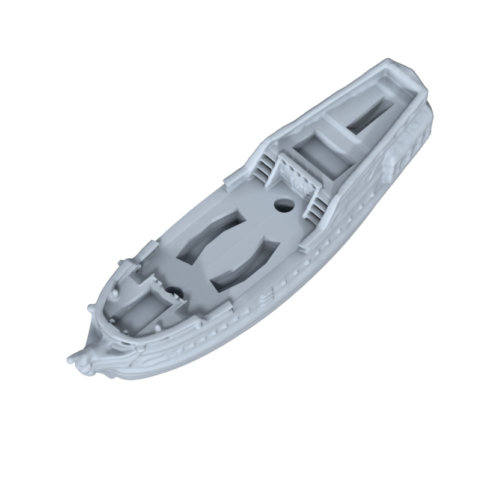
The Queen's Fleet hull, with a wheel built into the stern and cannon slots along the deck. Each faction has its own ship model; the count and HP are on your faction card.
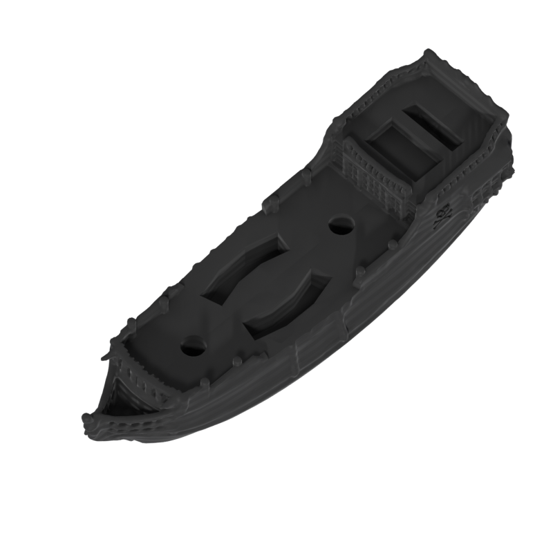
The Corsairs' lighter hull. Smaller deck, fewer cannon slots, faster across the table. Same wheel-in-stern design as the larger ships.
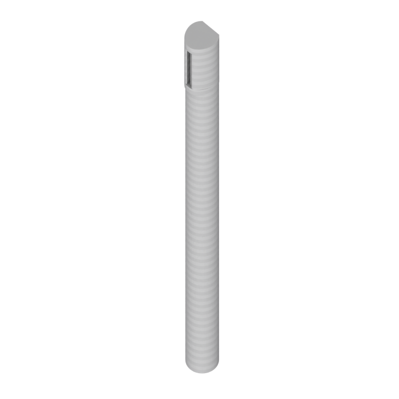
A removable fitting that plugs into the deck. Masts are the last fittings to come off when a ship takes damage.
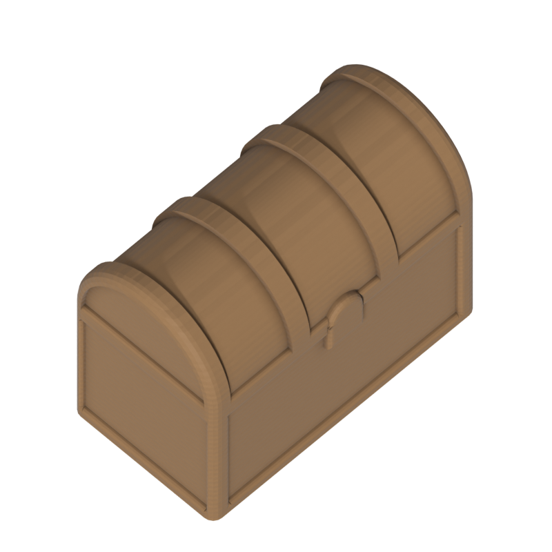
A removable fitting representing crates of supplies. Goes overboard before masts when a ship is hit.
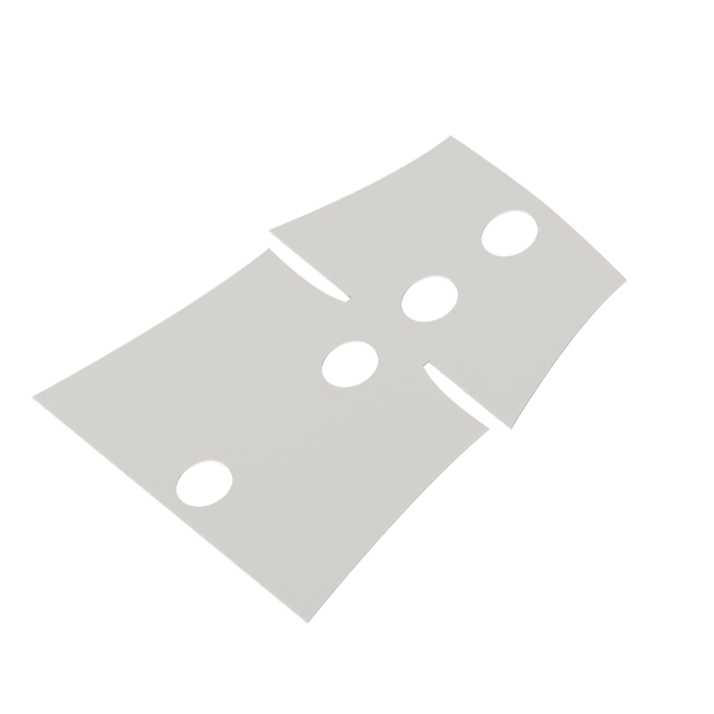
Slides over the mast. Mostly cosmetic, but it makes silhouettes readable across a crowded table.
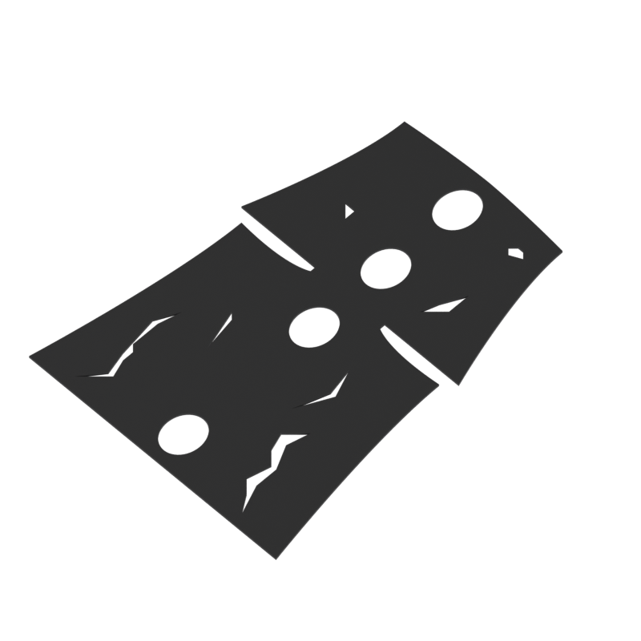
Cosmetic-only torn-sail variant. Swap in when assembling pirate or otherwise rough-around-the-edges ships. Doesn't affect gameplay.
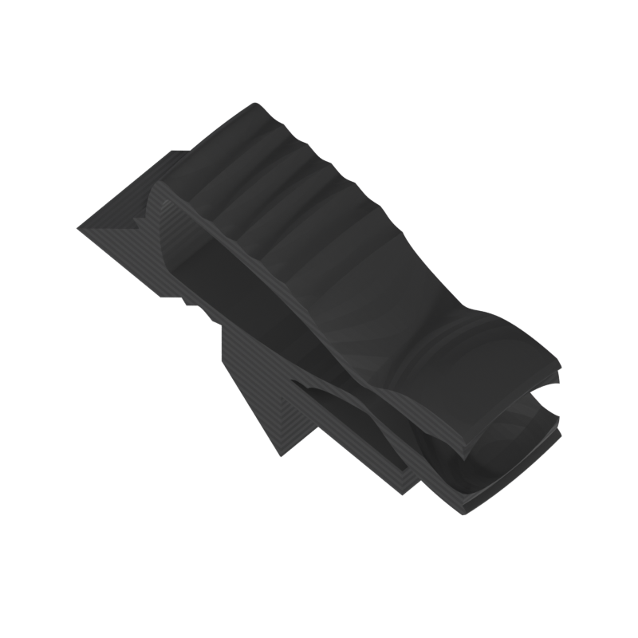
The tension-loaded firing mechanism. Plugs into a cannon slot on a ship or island. The same cannon is shared across all your ships.
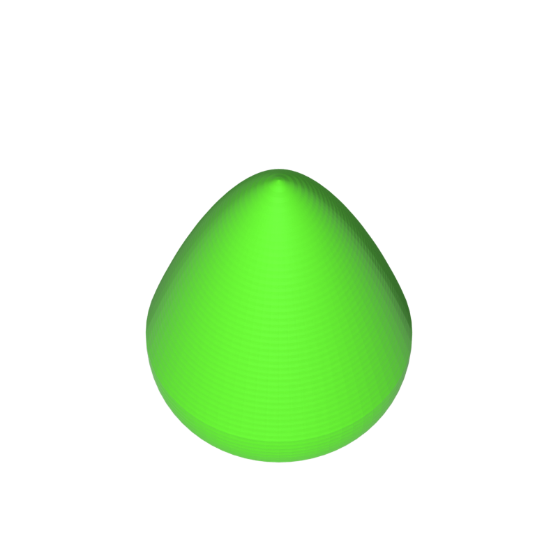
Loaded into the cannon and fired across the table. Retrieved at the end of your turn.
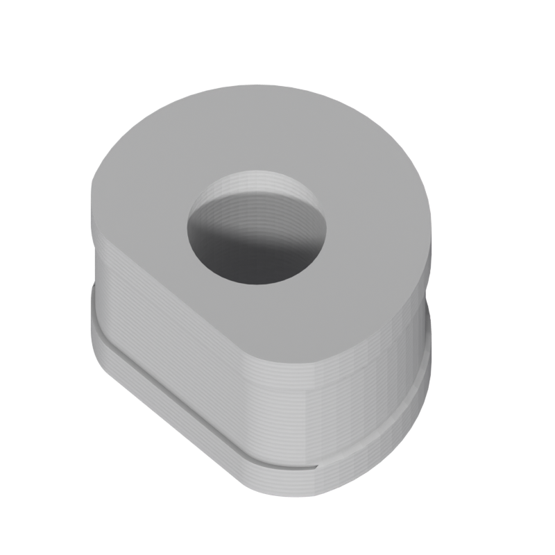
Built into the stern. One full revolution is one click of movement. The flat spot on the rim parks the ship between turns.
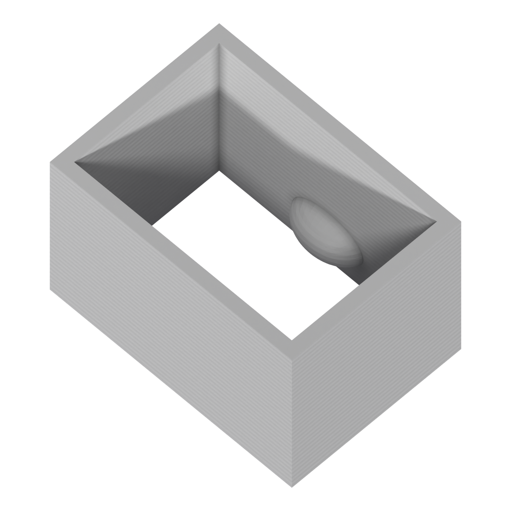
Cradles the movement wheel inside the hull. Printed once per ship and assembled with the wheel before first play.
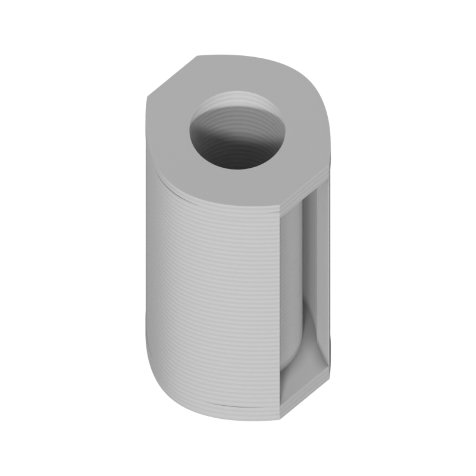
The primary flag mount. Slide a paper flag of any design into the slot at the top, then plant the holder in any flag socket on a ship or island. Lets each player invent their own fleet markings without printing anything new.
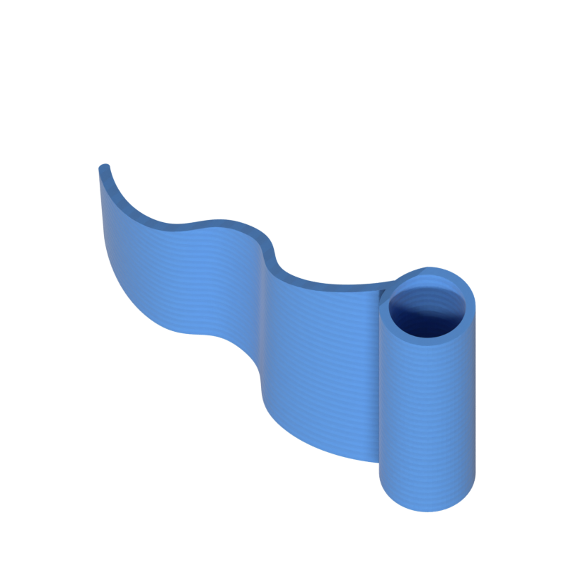
A fully 3D-printed flag for players who really want one in solid plastic instead of paper. Functionally identical to the paper-flag holder.
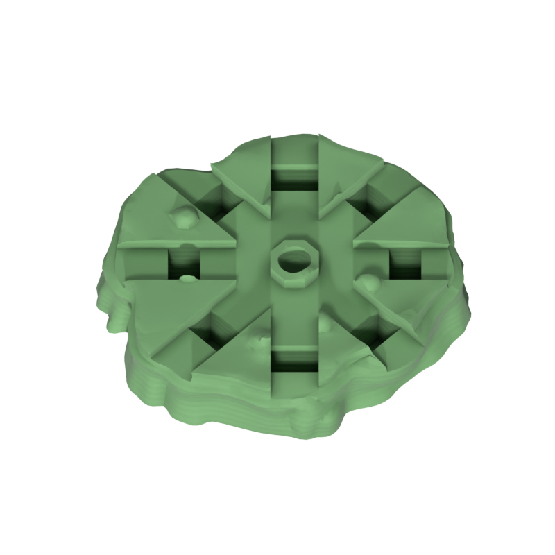
A small puck with cannon slots and flag holes. Sits on top of a box, book, or upside-down cup to turn any household object into an island.
Drawn from the bag and spent at the start of your turn for one-time effects: Brace, Signal, Full Sail, Evasive, Gunner, Repair, Boarding. See the rulebook's Coin Actions for the full list.
Most parts press-fit into slots on the ship or island. There's no glue and no tools required, but a few pieces need a one-time assembly before the first game.
Coins don't assemble. Print them, dump them in a small cloth bag (any pouch works), and shake before play. Each player contributes 20 coins to the bag at setup, in the ratios on the print list below.
The slots are designed for a snug press-fit. If a fitting is loose, scale the male peg up 0.5–1% in your slicer. If it's tight, sand the peg or scale down by the same. Most slicers can rescale a single STL without re-exporting.
These are starting-point settings that have worked well across our test prints. Tune to your printer and filament; the game is forgiving as long as fittings press-fit cleanly.
TPU 95A bounces less than PLA, keeps shots closer to where they land, and survives floor drops. Worth dialing in even if you don't usually print flexibles.
Wrap a thin rubber band around the rim of each wheel before assembling the ship. The wheels need the band to click at all; without it the wheel just slides instead of rolling.
Two copies of the same cannon rarely shoot with exactly the same force, and the firing arm softens slightly with use. Fire a few practice rounds at the start of each game so everyone calibrates before the first real shot.
Print one full set per faction in that fleet's color. Sails and flags do most of the silhouette work across a 5×5 ft table, so don't fuss over hull color matching exactly.
A faction set is a complete print run for one player: their fleet, plus a fair share of shared terrain and coins. Almost every piece is 3D-printed; the only exception is the draw bag (any small cloth pouch will do).
Print one of these per player. If two friends are each printing a faction set, the table will have everything it needs without further coordination.
| Piece | Quantity | Notes |
|---|---|---|
| Ships (your faction) | 2–5 | Count varies by faction. Check your faction reference card. |
| Fittings (masts, cargo, supplies) | varies | Removable pieces that plug into your ship. Enough for every ship at full HP, plus a few spares. |
| Sails | 1 per mast | Cosmetic. Print a few damaged sails for flavor on pirate-leaning fleets. |
| Cannons | 3–4 | Flag color or a neutral like black or grey. Shared across your ships and captured islands. |
| Cannonballs | 15–20 | Same color as the cannons. TPU prints bounce less than PLA if you want calmer shots. |
| Flag pieces | 10–15 | Paper holders, printed flags, or a mix. In your fleet or alliance color, enough to cover your ships plus any islands you capture. |
| Movement wheel + carriage | 1 per ship | One-time assembly. Pre-assemble before the first game. |
| Islands | 2–3 | Print the included island models, or use island toppers on top of boxes, books, or other household objects. |
| Rocks / sea stacks | 2 | Optional terrain. Blocks ships and cannonballs. An upside-down cup or mug also works in a pinch. |
| Reefs / shoals | 2 | Optional terrain. Blocks ships only; cannonballs pass overhead. A coaster or scrap of cardstock also works. |
| Coins (full sets of 20) | 2 sets | Each set is 2 Brace, 2 Signal, 4 Full Sail, 2 Evasive, 4 Gunner, 4 Repair, 2 Boarding. |
Draw bag: one cloth pouch for the whole table, regardless of player count. Any small bag works; don't print it.
The full STL pack and the rulebook are sent out to subscribers and pinned in the playtest Discord. Files are still actively changing session to session.